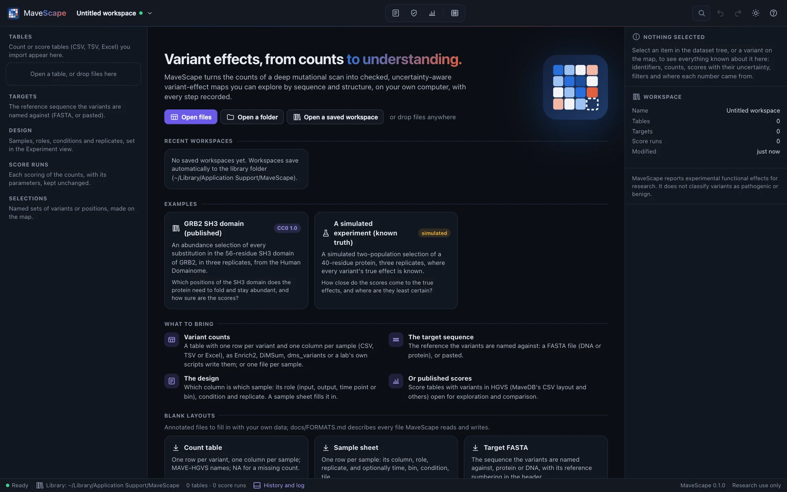
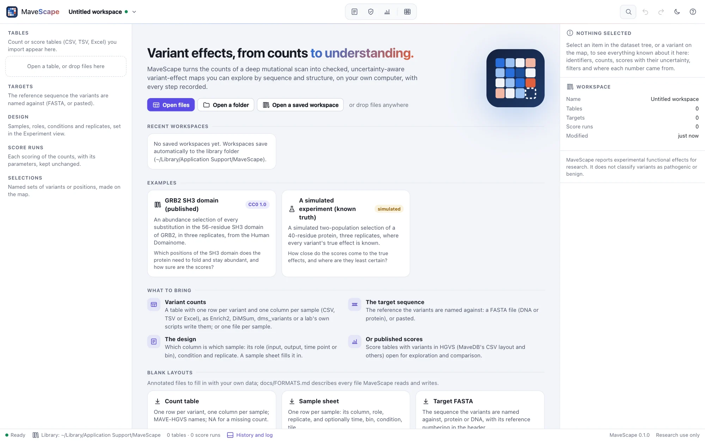

Getting started
Start MaveScape, find your way around its window, and work through an example before you bring your own data.
Start MaveScape
If you have not installed it yet, see Install. Then, in a terminal:
$ mavescapeMaveScape starts a local server on http://127.0.0.1:8820 (or the next free port) and opens its window. If Chrome, Edge, Brave or Chromium is installed, the window is a desktop app window with its own browser profile; otherwise your default browser opens the address. Closing the window stops the program.
Files named on the command line open directly. Running the command again while MaveScape is open hands the files to the open window instead of starting a second copy:
$ mavescape counts.csv target.fastaThe start page


Open files or a folder, or drop them anywhere on the window. Workspaces save automatically to the library folder named in the status bar, and the recent ones are listed here. The blank layouts are annotated files to fill in with your own data: a count table, a sample sheet and a target FASTA.
The window
- Top bar: the workspace name and its menu (a dot shows whether it is saved), the views, search and commands (⌘K), undo and redo, the appearance and help (?).
- Views: Experiment, QC, Score and Map; ⌘1 to ⌘4 switch between them.
- The workflow strip, above every view: each step done, next, needing attention or still to do, with the next action and its button.
- The dataset tree (left): the workspace's tables, targets, design, score runs and saved selections. Click one to see it in the inspector.
- The inspector (right): everything known about the item in focus, from a table's problems to a variant's replicates.
- The drawer (⌘J): the workspace's history, every change chained so that an edit after the fact is caught, and the log.
⌘\ hides the dataset tree and ⇧⌘\ the inspector. On Windows and Linux, use Ctrl wherever this guide says ⌘.
A first analysis
- Open the GRB2 SH3 domain example from the start page. It opens scored with MaveScape's defaults, in the QC view, with its guide in the inspector (Examples).
- Read the findings in QC: all pass but the variance beyond counting, a bottleneck (Quality control).
- In Score, score again with the Enrich2-compatible preset and compare the runs (Scoring).
- Open the Map and click a dark cell to see its evidence (The map and the inspector).
- Export the scores and the methods from the run's Export… menu (Exports and the record).
Your own data
Open your count table and the target's FASTA together; MaveScape recognizes the layout, checks every variant name against the target and lists anything that blocks scoring. Then follow the workflow strip: Draft the design, check it in Experiment, and score. Opening your data covers the layouts MaveScape reads.